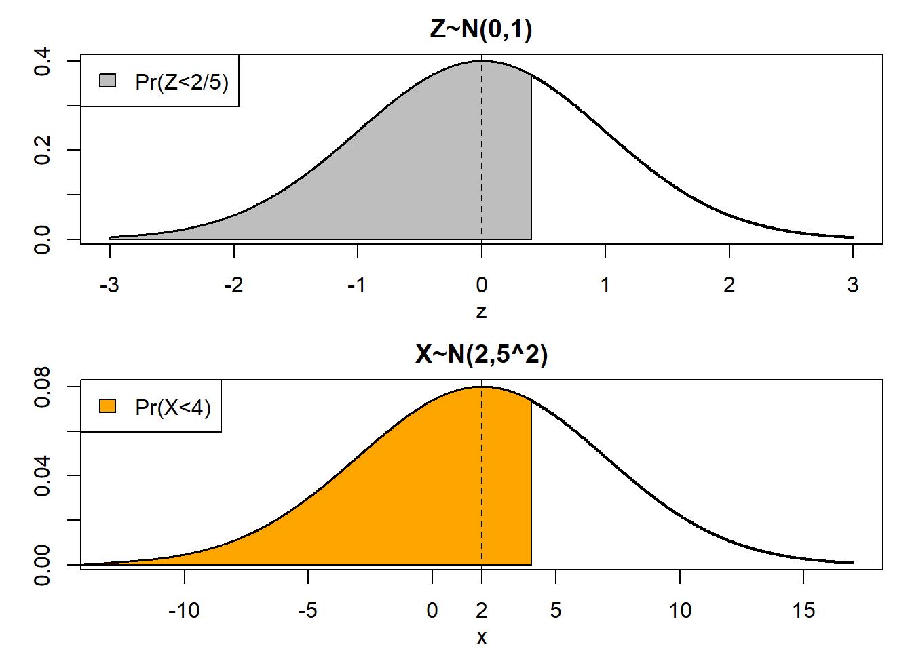
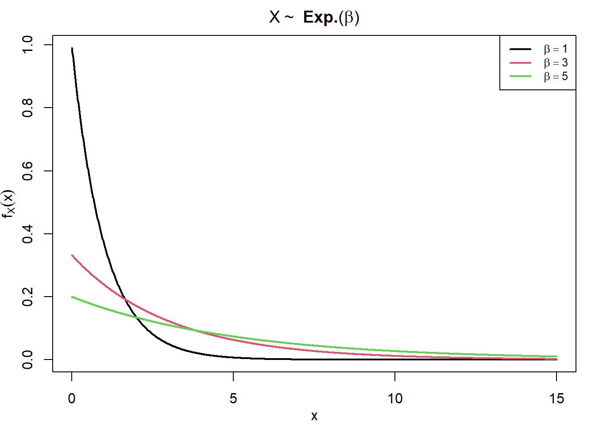

pnorm(2/5)[1] 0.6554217pnorm(4, mean=2, sd=5)[1] 0.6554217Um grupo de 12 homens e 8 mulheres concorre a três prêmios através de um sorteio, sem reposição de seus nomes. Qual a probabilidade de:
A probabilidade de que \(A\) resolva um problema é de \(2/3\), e a probabilidade de que \(B\) o resolva é de \(3/4\). Se ambos tentarem independentemente, qual a probabilidade de o problema ser resolvido?
Se \(\Pr:\mathcal{F}\longrightarrow \mathbb R\) é uma função de probabilidade e \(A\) e \(B\) são quaisquer dois eventos em \(\mathcal{F}\), mostre que
Suponha que \(5\%\) dos homens e \(0.25\%\) das mulheres sejam daltônicos. Uma pessoa é escolhida aleatoriamente e é daltônica. Qual é a probabilidade de a pessoa escolhida ser do sexo masculino? (Suponha que homens e mulheres sejam em número igual.)
Considere o problema de um teste clínico para a presença de uma certa doença respiratória.
Se um indivíduo fizer o teste e o resultado for negativo. Qual a probabilidade desse indivíduo estar infectado?
A tabela abaixo descreve a contagem de frequência conjunta entre setor de alocação e faixa salarial dos 175 funcionários de uma empresa.
| A | B | C | Total | |
|---|---|---|---|---|
| Logística | 22 | 15 | 7 | 44 |
| Vendas | 55 | 10 | 12 | 77 |
| Recursos Humanos | 23 | 25 | 6 | 54 |
| Total | 100 | 50 | 25 | 175 |
Para responder aos itens abaixo, considere que
A tabela a seguir fornece a distribuição de probabilidade conjunta entre a situação de emprego e a graduação universitária entre aqueles empregados ou procurando trabalho (desempregados) na população em idade ativa dos EUA para 2012.
| Unemployed (\(Y=0\)) | Employed (\(Y=1\)) | Total | |
|---|---|---|---|
| Non–college grads (\(X = 0\)) | 0.053 | 0.586 | 0.639 |
| College grads \((X = 1)\) | 0.015 | 0.346 | 0.361 |
| Total | 0.068 | 0.932 | 1.000 |
O valor-esperado de uma variável aleatória discreta é definido como \[\begin{align*} E(Y) = \sum_{y\in Y[\Omega]} y\Pr(Y=y), \end{align*}\]
onde \(Y[\Omega]\) representa a imagem da variável aleatória \(Y\). No nosso caso, a variável aleatória \(Y\) pode adotar os valores \(y=\{0,1\}\). Portanto \[\begin{align*} E(Y) &= \sum_{y\in\{0,1\}} y\Pr(Y=y), \\ &= 0\times 0.068 + 1 \times 0.932 = 0.932. \end{align*}\]
A taxa de desemprego é a fração da população não empregada. Ou seja, é a probabilidade de sortearmos uma pessoa desempregada. \[\begin{align*} \Pr(Y=0) \longrightarrow \text{Taxa de Desemprego}. \end{align*}\] Como \(Y=1\) é o complemento do evento \(Y=0\), \(\Pr(Y=0)=1-\Pr(Y=1)\).
No item (a), vimos que, no caso específico de uma v.a. bernoulli, \(E(Y)=\Pr(Y=1)\). Portanto \[\begin{align*} \Pr(Y=0)=1-\Pr(Y=1)=1-E(Y). \end{align*}\]
A esperança condicional é a esperança calculada com respeito à probabilidade condicional. Isto é, \[\begin{align*} E(Y|X=x) = \sum_{y\in Y[\Omega]} y \Pr(Y=y|X=x). \end{align*}\] Da definição de probabilidade condicional, \[\begin{align*} E(Y|X=x) = \sum_{y\in Y[\Omega]} y \frac{\Pr(Y=y,X=x)}{\Pr(X=x)} = \frac{1}{\Pr(X=x)}\sum_{y\in Y[\Omega]} y \Pr(Y=y,X=x). \end{align*}\]
Queremos primeiro \(E(Y|X=1)\) e depois \(E(Y|X=0)\). Para calcular \(E(Y|X=1)\) as probabilidades relevantes são
Agora é direto computar \[\begin{align*} E(Y|X=1) = \sum_{y\in\{0,1\}} y\Pr(Y=y|X=1) = 0 \times \frac{0.015}{0.36} + 1\times \frac{0.346}{0.361} = 0.9584. \end{align*}\] Analogamente, \[\begin{align*} E(Y|X=0) = \sum_{y\in\{0,1\}} y\Pr(Y=y|X=0) = 0\times\frac{0.053}{0.639} + 1\times\frac{0.586}{0.639} = 0.9171. \end{align*}\]
Queremos \(\Pr(Y=0|X=1)\) e \(\Pr(Y=0|X=0)\). Da definição de probabilidade condicional, \[\begin{align*} \Pr(Y=0|X=0) &= \frac{\Pr(Y=0,X=0)}{\Pr(X=0)} = \frac{0.053}{0.639} = 0.0829,\\ \Pr(Y=0|X=1) &= \frac{\Pr(Y=0,X=1)}{\Pr(X=1)} = \frac{0.015}{0.361} = 0.0416. \end{align*}\] Pelo mesmo argumento do item (b), esses valores são equivalentes a \(1-E(Y|X=0)\) e \(1-E(Y|X=1)\), respectivamente.
Aqui queremos \(\Pr(X=0|Y=0)\) e \(\Pr(X=1|Y=0)\). Da mesma forma do item anterior, \[\begin{align*} \Pr(X=0|Y=0) &= \frac{\Pr(X=0,Y=0)}{\Pr(Y=0)} = \frac{0.053}{0.068} = 0.7794,\\ \Pr(X=1|Y=0) &=\frac{\Pr(X=1,Y=0)}{\Pr(Y=0)}=\frac{0.015}{0.068} = 0.2206. \end{align*}\]
Duas variáveis aleatórias \(X\) e \(Y\) são ditas independentes se, e somente se, \[\begin{align*} f(x,y) = f_X(x)f_Y(y), \end{align*}\] para todo \(x\in X[\Omega]\) e \(y\in Y[\Omega]\). Quando se tratando de variáveis aleatórias discretas, podemos escrever a relação como \[\begin{align*} \Pr(X=x, Y=y) = \Pr(X=x)\Pr(Y=y), \end{align*}\] para todos os valores admissíveis de \(x\) e \(y\). No caso do exercício, tome
\[\begin{align*} \Pr(X=0)\times\Pr(Y=0)=0.639\times0.068=0.043452\neq\Pr(X=0,Y=0) \end{align*}\] Portanto as variáveis aleatórias \(X\) e \(Y\) não são independentes.
O tempo \(T\), em minutos, necessário para um operário processar certa peça é uma variável aleatória com a seguinte função massa de probabilidade
| \(t\) | \(2\) | \(3\) | \(4\) | \(5\) | \(6\) | \(7\) |
|---|---|---|---|---|---|---|
| \(\Pr(T=t)\) | \(0.1\) | \(0.1\) | \(0.3\) | \(0.2\) | \(0.2\) | \(0.1\) |
Quais os possíveis valores adotados pela variável aleatória \(T\)?
Qual o tempo médio de processamento das peças?
Qual é a variância do tempo de processamento das peças?
Quanto o operário deve receber, em média, por peça?
Considere que, para cada peça processada, o operário ganha um fixo de \(\$2.00\), mas, se ele processa a peça em menos de seis minutos, ganha \(\$0.50\) por cada minuto poupado. Por exemplo, se ele processa a peça em quatro minutos, recebe a quantia adicional de \(\$1.00\).
Se \(t\) é o número de minutos gastos do processamento de uma peça individual, defina uma função \(g(t)\) que descreve a remuneração do operário recebida pelo processamento dessa peça específica.
Quanto o operário deve receber, em média, por peça?
Qual é a variância da remuneração do operário?
Seja \(X\) uma variável aleatória discreta com função massa de probabilidade \(\Pr(X=x)\). Então a esperança (ou valor-esperado) de \(X\) é dada por \[\begin{align*} E(X) = \sum_{x\in X[\Omega]} x\Pr(X=x). \end{align*}\] Se \(X\) for uma variável aleatória contínua com função densidade de probabilidade \(f(x)\) sua esperança é \[\begin{align*} E(X) = \int_{-\infty}^\infty xf(x)dx. \end{align*}\] Se \(a,b\in\mathbb R\), mostre que
\(E(aX) = aE(X)\)
\(E(a+X) =a+E(X)\)
\(E(a+bX) = a+bE(X)\)
A variância de uma variável aleatória \(X\) é dada por \[\begin{align*} Var(X)=E[(X-E(X))^2]. \end{align*}\] Mostre que
\(Var(X) = E(X^2)-E(X)^2\).
\(Var(X+a)=Var(X)\).
\(Var(aX)=a^2Var(X)\).
Sejam \(X\) e \(Y\) variáveis aleatórias definidas em um mesmo espaço amostral \(\Omega\). A covariância entre \(X\) e \(Y\) é definida como \[\begin{align*} Cov(X,Y)=E[(X-E(X))(Y-E(Y))]. \end{align*}\] Sendo \(a,b\in\mathbb R\), demonstre as propriedades abaixo.
\(Cov(X,Y)=Cov(Y,X)\).
\(Cov(X+a,Y+b)=Cov(X,Y)\).
\(Cov(aX,Y)=Cov(X,aY)=aCov(X,Y)\).
\(Cov(aX,bY)=abCov(X,Y)\).
\(Cov(X,Y)=E(XY)-E(X)E(Y)\).
Sejam \(X\) e \(Y\) variáveis aleatórias definidas em um mesmo espaço amostral \(\Omega\). O coeficiente de correlação (de Pearson) entre \(X\) e \(Y\) é definido como \[\begin{align*} Cor(X,Y)=\frac{Cov(X,Y)}{Sd(X)Sd(Y)}. \end{align*}\] Sendo \(a,b\in\mathbb R\), demonstre as propriedades abaixo.
\(Cor(aX,bY)=Cor(X,Y)\) se \(ab>0\).
\(Cor(aX,bY)=-Cor(X,Y)\) se \(ab<0\).
\(Cor(aX,bY)=\frac{ab}{|a||b|}Cor(X,Y)\) no caso geral para \(a,b\neq 0\).
Suponha que \(X\) e \(Y\) são variáveis aleatórias independentes, ambas com distribuição Normal. \(X\) tem média \(2\) e variância \(5^2\), enquanto \(Y\) tem média \(3\) e variância \(2^2\). Compute as probabilidades abaixo usando a tabela da distribuição normal padrão.
\(X\) tem distribuição \(N(2,5^2)\), mas só podemos consultar a tabela da Normal Padrão \(N(0,1)\). Precisamos padronizar a v.a. \(X\). \[\begin{align*} Z_X = \frac{X-\mu_X}{\sigma_X} \sim N(0,1). \end{align*}\] No caso, \(Z_X = (X-2)/5\).
Começamos escrevendo o que queremos \[\begin{align*} & \Pr(X\leq 4) = \rho. \end{align*}\] Então operamos a desigualdade para ``fazer \(Z_X\) aparecer’’. \[\begin{align*} & \Pr\left(\frac{X-2}{5}\leq \frac{4-2}{5}\right) = \rho \tag{$\star 1/2$} \\ & \Pr(Z_X\leq 2/5) = \Phi(2/5) = 0.65542 = \Pr(X\leq 4) \tag{$\star 2/2$} \end{align*}\]

null device
1 \[\begin{align*} \Pr(-1\leq X\leq 4) &= \Pr(X\leq 4) - \Pr(X\leq -1) \tag{$\star 1/2$} \end{align*}\] Já calculamos \(\Pr(X\leq 4)\) no item (a). Falta \(\Pr(X\leq -1)\). Normalizando vemos que é equivalente a calcular \[\begin{align*} \Pr\left(Z_X\leq \frac{-1-2}{5}\right) &= \Pr(Z_X\leq -0.6) \end{align*}\] Como a distribuição normal é simétrica e \(Z_X\) tem média zero, \[\begin{align*} \Pr(Z_X\leq -0.6) &= \Pr(Z_X\geq 0.6) \\ &=1-\Pr(Z_X\leq 0.6) = 1 - 0.72575 = 0.27425 \end{align*}\] Então \[\begin{align*} \Pr(-1\leq X\leq 4) &= 0.65542 - 0.27426 = 0.38116 \tag{$\star 2/2$} \end{align*}\]
\(\Pr(Y\geq 0)\).
\(\Pr(-1\leq Y\leq 4)\).
\(\Pr(Y\leq 3|X\geq4)\).
\(\Pr\left((Y\leq 3)\cap (X\geq4)\right)\).
\(\Pr\left((Y\leq 3)\cup (X\geq4)\right)\)
Um número \(x\) é sorteado aleatoriamente de acordo com uma distribuição normal, com média 0 e variância 2. Então desenhamos um quadrado com lado igual a \(|x|\).
A área do quadrado é inferior a 2 se \(|x|\leq\sqrt{2}\), ou seja, se \(-\sqrt{2}\leq x \leq\sqrt{2}\). Queremos \[\begin{align*} \Pr(X^2\leq 2) = \Pr(-\sqrt{2}\leq X \leq\sqrt{2}) = \Pr(X\leq\sqrt{2})-\Pr(X\leq-\sqrt{2}) \tag{$\star 2/4$} \end{align*}\] Porque a distribuição normal é simétrica, \(\Pr(X\geq\mu+\alpha)=\Pr(X\leq\mu-\alpha)\). \(\mu=0\) no nosso caso. \[\begin{align*} \Pr(X^2\leq 2) = 2\Pr\left(X\leq\sqrt{2}\right)-1 \tag{$\star3/4$} \end{align*}\]
Defina \(Z=X/\sigma_x=X/\sqrt{2}\), tal que \(X = Z\sqrt{2}\). \[\begin{align*} \Pr(X^2\leq 2) &= 2\Pr\left( Z\sqrt{2}\leq\sqrt{2} \right)-1\\ &= 2\Pr(Z\leq 1) - 1\\ &= 2(0.84134)-1 = 0.68268 \tag{$\star4/4$} \end{align*}\]
Queremos \(E(X^2)\). Lembre que \[\begin{align*} Var(X) &= E(X^2) - E(X)^2\\ E(X^2) &= Var(X)+E(X)^2\\ E(X^2) &= \sigma^2 + \mu^2 \end{align*}\] Mas sabemos que \(\mu_X=0\), então \(E(X^2)=\sigma^2_X=2\).
O modelo de probabilidades mais simples é chamado experimento de Bernoulli. Jogamos uma “moeda”, existe probabilidade \(p\) de ocorrer sucesso (representado por \(x=1\)), e probabilidade \(1-p\) de fracasso (representado por \(x=0\)).
Uma variável aleatória discreta \(X\) tem distribuição Bernoulli com parâmetro \(p\in(0,1)\) se sua função massa de probabilidade tiver a forma \[\begin{align*} \Pr(X=x)=p^x(1-p)^{1-x},\quad x\in\{0,1\}. \end{align*}\] Essa distribuição modela o lançamento de uma única moeda “enviesada”, com probabilidade de sucesso \(p\).
Uma variávael aleatório \(X\) tem distribuição Uniforme com parâmetros \(a\) e \(b\) se sua função densidade de probabilidade tiver a forma \[\begin{align*} f(x;a,b) = \begin{cases} \frac{1}{b-a}, \quad \text{se } a\leq x\leq b \\ 0, \quad \text{caso contrário.} \end{cases} \end{align*}\]
Se \(X\) tiver distribuição uniforme com parâmetros \(\alpha\) e \(\beta\), mostre que
\(E(X)=\frac{\alpha+\beta}{2}\).
\(Var(X) = \frac{1}{3}\frac{\beta^3-\alpha^3}{\beta-\alpha} - \frac{1}{4}(\alpha+\beta)^2 = \frac{(\beta-\alpha)^2}{12}\).
\[\begin{align*} F(x) = \begin{cases} 0, &x<\alpha, \\ \frac{x-\alpha}{\beta-\alpha}, &\alpha\leq x \leq \beta,\\ 1, &x>\beta. \end{cases} \end{align*}\]
Dizemos que uma v.a. \(T\) tem distribuição exponencial com parâmetro \(\beta\) se sua f.d.p tiver a forma \[\begin{align*} f(t,\beta) \begin{cases} \frac{1}{\beta}\exp\left(-\frac{1}{\beta}t \right), \text{ se } t>0,\\ 0, \text{ caso contrário.} \end{cases} \end{align*}\]
Se \(T\) tiver distribuição exponencial com parâmetro \(\beta\), mostre que:
\(F(t;\beta)=1-e^{-x/\beta}\)
\(E(T)=\beta\)
\(Var(T)=\beta^2\)

null device
1 Uma distribuição qui-quadrado com parâmetro \(m\) (seus graus de liberdade) é definida como a soma de \(m\) variáveis aleatórias normais padrão elevadas ao quadrado. Ou seja, se \(z_j\sim N(0,1)\), dizemos que \(C\sim \chi^2(m)\) se \[\begin{align*} C = z_1^2 + z_2^2 + \dots + z_m^2 = \sum^m_{j=1}z_j^2 \sim \chi^2(m) \end{align*}\]
Mostre que \(E(C)=m\).
Sabendo que se \(z\sim N(0,1)\), \(E(z^4)=3\), mostre que \(Var(C)=2m\).
Qual forma uma v.a. qui-quadrado deve adotar conforme \(m\) cresce? (Dica: use o Teorema do Limite Central.)